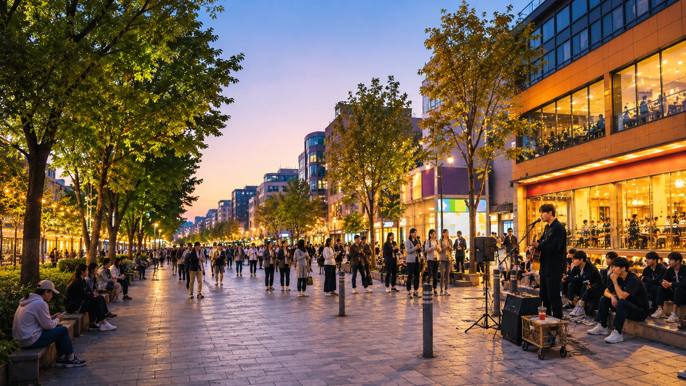
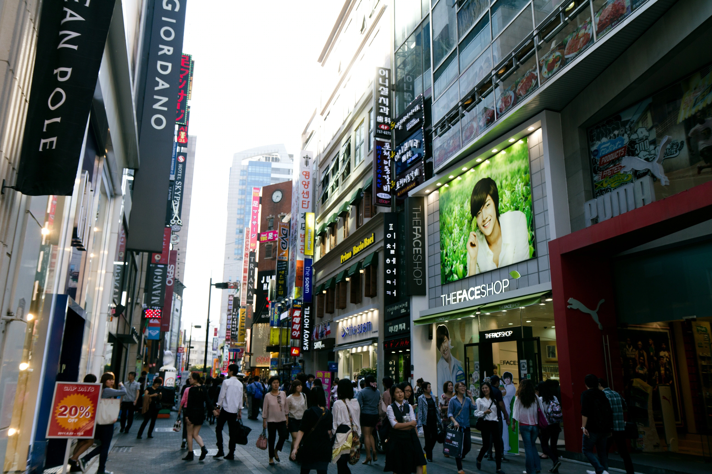
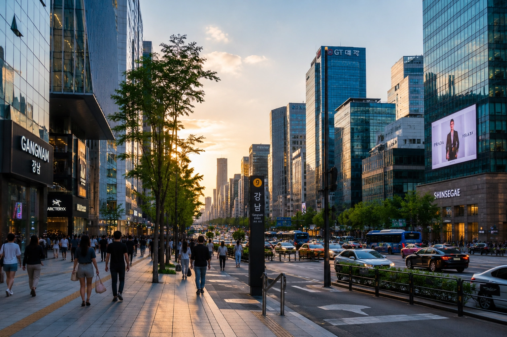
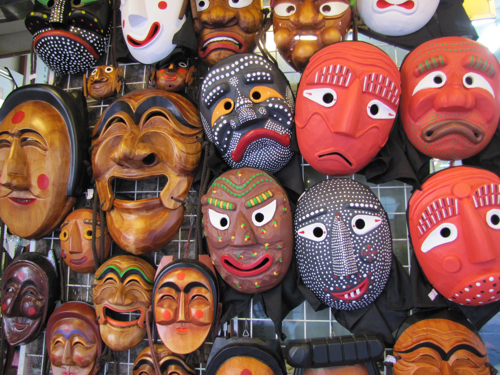
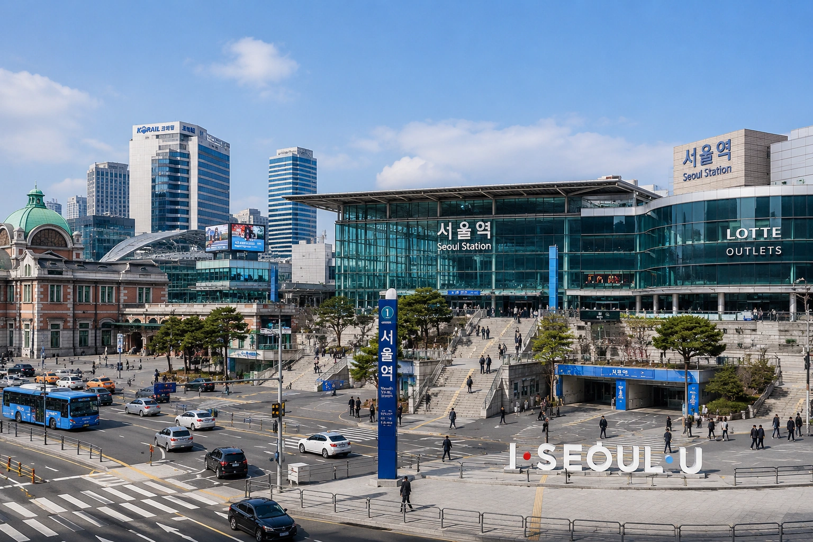
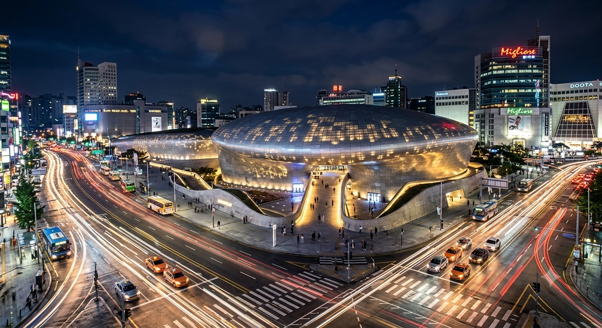
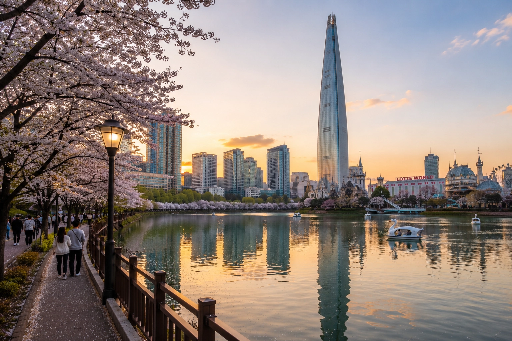
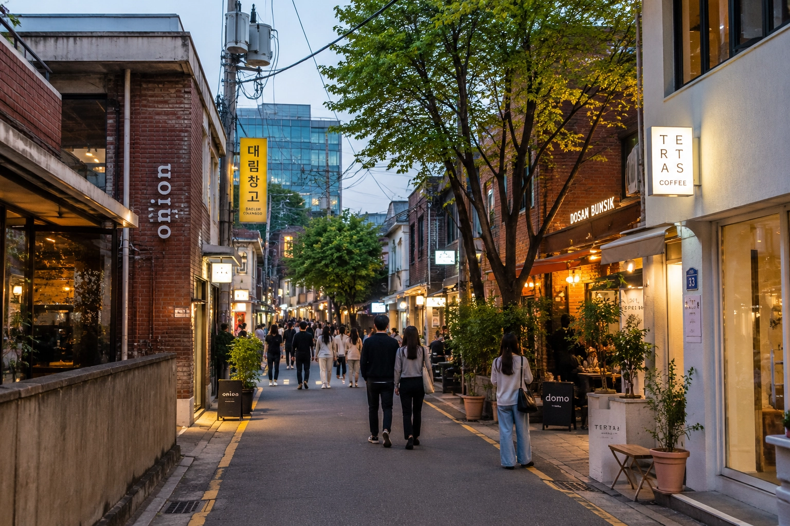
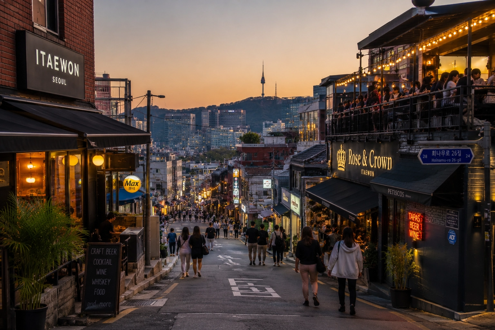
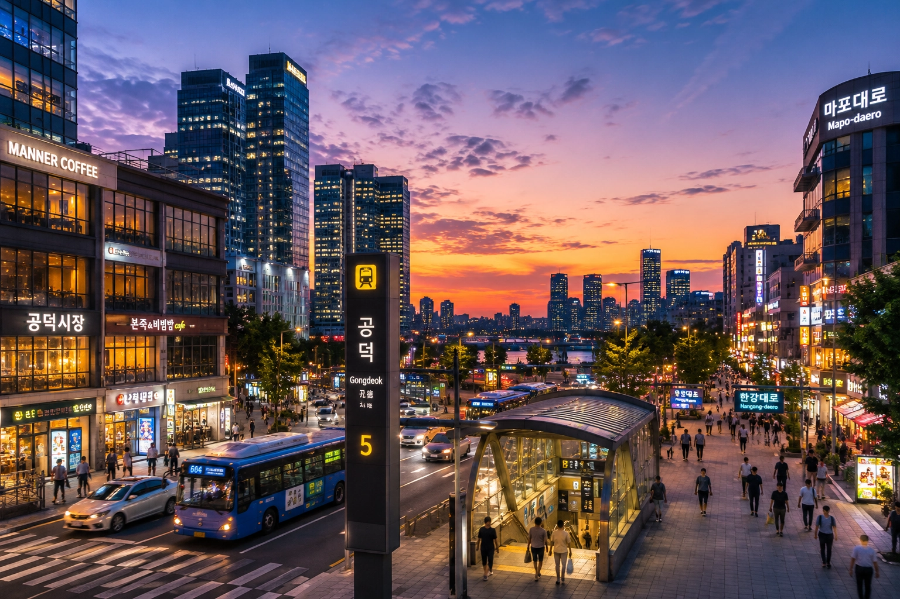

Varies by area and room type; compare total trip value.
Stay in Seoul
Where Should You Stay in Seoul?
Choose the right area before choosing your hotel. Compare neighborhoods by travel style, budget, transport access, and itinerary.
Why Start with the Area?
In Seoul, your stay area affects daily travel time, nightlife, shopping, airport access, noise level, and hotel value. Choosing the area first makes hotel selection much easier.
Quick decision
Compare areas before choosing where to stay
Strongest from Seoul Station, Hongdae and Mapo / Gongdeok.
Better in calmer areas such as Insadong, Jamsil or Mapo / Gongdeok.
Hongdae, Itaewon and parts of Gangnam are stronger for late nights.
Prioritize room comfort, easy walking and luggage-friendly routes.
Myeongdong, Dongdaemun, Gangnam and Jamsil are strong shopping bases.
Quick answer
Where Should You Stay in Seoul?
Choosing the right area can save time, reduce walking, and make your trip much easier.
• First visit? Start with Myeongdong or Hongdae. • Myeongdong is ideal for sightseeing and shopping.
• Hongdae is best for cafés, nightlife, and easy airport rail access. • Traveling with children or large luggage? Prioritize convenience before hotel price.
Quick recommendation
Choose the Right Seoul Area for Your Trip
Compare neighborhoods based on your travel style, budget, airport access, shopping, nightlife, and more.
| Travel Style | Recommended Areas | Why |
|---|---|---|
| First-time Visitor | Myeongdong · Hongdae | Excellent transport, easy sightseeing, shopping, and many hotel options. |
| Family | Jamsil · Mapo-Gongdeok | Quieter neighborhoods, larger rooms, and easier travel with luggage or strollers. |
| Couples | Hongdae · Insadong · Seongsu | Cafés, restaurants, scenic walks, and a relaxed atmosphere. |
| Solo Travelers | Hongdae · Myeongdong | Easy to explore alone with convenient transport and lively streets. |
| Business | Gangnam · Mapo-Gongdeok | Business districts with reliable transport connections. |
| Luxury | Gangnam · Jamsil · Myeongdong | Premium hotels, shopping, and upscale dining. |
| Budget | Hongdae · Dongdaemun | Affordable accommodation with good transport and food options. |
| Shopping | Myeongdong · Gangnam · Dongdaemun | Department stores, shopping streets, and major retail areas. |
| Nightlife | Hongdae · Itaewon · Gangnam | Bars, clubs, live music, and late-night dining. |
| Traditional Culture | Insadong | Historic streets, tea houses, palaces, and Korean culture. |
| Airport Access | Seoul Station · Hongdae · Mapo-Gongdeok | Fast AREX access and convenient airport bus connections. |
Area comparison
Compare Seoul stay areas
No area is perfect for everyone. Use these notes to match the area to your route, luggage and travel style.

Hongdae
Explore Hongdae →
Myeongdong
Explore Myeongdong →
Gangnam
Explore Gangnam →
Insadong
Explore Insadong →
Seoul Station
Explore Seoul Station →
Dongdaemun
Explore Dongdaemun →
Jamsil
Explore Jamsil →
Seongsu
Explore Seongsu →
Itaewon
Explore Itaewon →
Mapo / Gongdeok
Explore Mapo / Gongdeok →How to choose
Choose the area first, then the hotel
A famous hotel can still be a poor fit if the area adds long transfers, difficult walks or night noise.
Airport access
Check AREX, airport bus, taxi and late-night options before booking.
Suitcase burden
Look beyond distance. Stairs, exits, slopes and crowds matter.
Subway access
A nearby station is useful only if the line and exits fit your trip.
Nightlife noise
Nightlife areas are fun, but not always right for light sleepers.
Family suitability
Families should prioritize quietness, room practicality and easy walking.
Shopping and food
Choose an area where everyday meals and shopping are easy.
Traditional culture
Stay near palace routes if old Seoul is your main reason to visit.
Budget and luxury
Compare value by area. Cheap is not always convenient.
Common mistakes
Avoid these Seoul hotel booking mistakes
Booking only by price.
Check transport, luggage route and area fit first.
Ignoring airport access.
A hard arrival can ruin the first day.
Ignoring luggage and hills.
Check the actual walking route, not only the map distance.
Choosing nightlife areas for quiet stay.
Pick calmer areas if sleep is the priority.
Assuming subway distance means suitcase-friendly.
Station exits, stairs and elevators matter more than meters.
Booking far from the station.
Long walks feel longer with suitcases, rain or children.
Not checking late-night arrival options.
After midnight, train and bus choices can change.
Example scenarios
Match your trip to an area
First trip, 5 days, shopping and food
Recommended Area: Myeongdong
Why: Central, easy and strong for shopping and meals.
Alternative: Hongdae
Arriving late with two suitcases
Recommended Area: Seoul Station or Mapo / Gongdeok
Why: Transport and luggage access matter most.
Alternative: Hongdae
Family with children
Recommended Area: Jamsil or Mapo / Gongdeok
Why: More practical for comfort, quietness and access.
Alternative: Insadong
Couple cafe trip
Recommended Area: Seongsu or Hongdae
Why: Strong cafe access and good walking plans.
Alternative: Insadong
Business trip in Gangnam
Recommended Area: Gangnam
Why: Better meeting access and business hotel options.
Alternative: Mapo / Gongdeok if airport access matters more.
Luxury stay
Recommended Area: Gangnam or Jamsil
Why: Stronger premium hotel and shopping options.
Alternative: Myeongdong
Traditional culture trip
Recommended Area: Insadong
Why: Better for palaces, galleries, tea houses and old Seoul.
Alternative: Myeongdong
Budget solo trip
Recommended Area: Hongdae or Dongdaemun
Why: Practical transport, food and budget options.
Alternative: Seongsu if cafes matter more.
FAQ
Where to stay in Seoul FAQ
What is the best area to stay in Seoul for first-time visitors?
Myeongdong is usually the easiest first-time base. Hongdae is also strong if you want cafes, nightlife and airport rail access.
Is Myeongdong or Hongdae better?
Choose Myeongdong for shopping and central sightseeing. Choose Hongdae for cafes, nightlife and AREX airport access.
Is Gangnam a good area to stay?
Yes, especially for business, luxury, shopping and southern Seoul plans. It is less ideal for traditional culture trips.
Where should families stay in Seoul?
Families should consider Jamsil, Insadong or Mapo / Gongdeok, depending on the trip plan and airport route.
Where should I stay with large suitcases?
Start with Seoul Station, Hongdae or Mapo / Gongdeok, then check the exact hotel walking route.
What is the best area for nightlife?
Hongdae, Itaewon and parts of Gangnam are better for nightlife.
What is the best area for shopping?
Myeongdong, Dongdaemun, Gangnam and Jamsil are strong shopping areas.
What is the best area for traditional culture?
Insadong is the best fit for palaces, galleries, tea houses and old Seoul atmosphere.
Is Seoul Station a good place to stay?
Yes, if airport access, rail transfers or short stays matter most.
Is Jamsil good for tourists?
Jamsil is good for families, malls, luxury hotels and theme park plans, but airport access takes longer.
Is Seongsu good for first-time visitors?
Usually not as the first choice. It is better for cafes, design shops and repeat visitors.
Should I stay near a subway station?
Yes, but also check exits, elevators, stairs and walking distance with suitcases.
Should I choose a hotel near an airport bus stop?
Yes, especially with large suitcases, children or a late-night arrival.
Which area is best for couples?
Hongdae, Seongsu and Insadong are good choices depending on whether you want energy, cafes or a calmer cultural stay.
Should I choose the cheapest hotel?
Not always. A cheap hotel can cost time and comfort if the location, airport route or walking path is poor.
Korea Inside recommendation
Choose area, then hotel, then airport transfer
- 1 : Choose the Seoul area that fits your travel style.
- 2 : Choose a hotel with a good walking route and transport access.
- 3 : Check how you will get there from Incheon Airport.